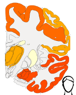
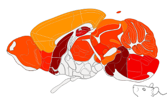

Easy visualization of brain data as a heatmap
View the Project on GitHub LiorKirsch/brain-heatmap
.
View the Web version on GitHub LiorKirsch/brain-heatmap/tree/gh-pages
Use this page to generate brain heatmaps ontop of the Allen Brain Atlas. Using this page you can generate images for the human brain (such as this ) or for the mouse brain (such as this).
 
File -> make a copy
File -> publish to the web -> start publishing
and copy the link.
I would like the thanks The Allen Institute for the hard work they put in creating the reference atlases and for making them publicly available online.